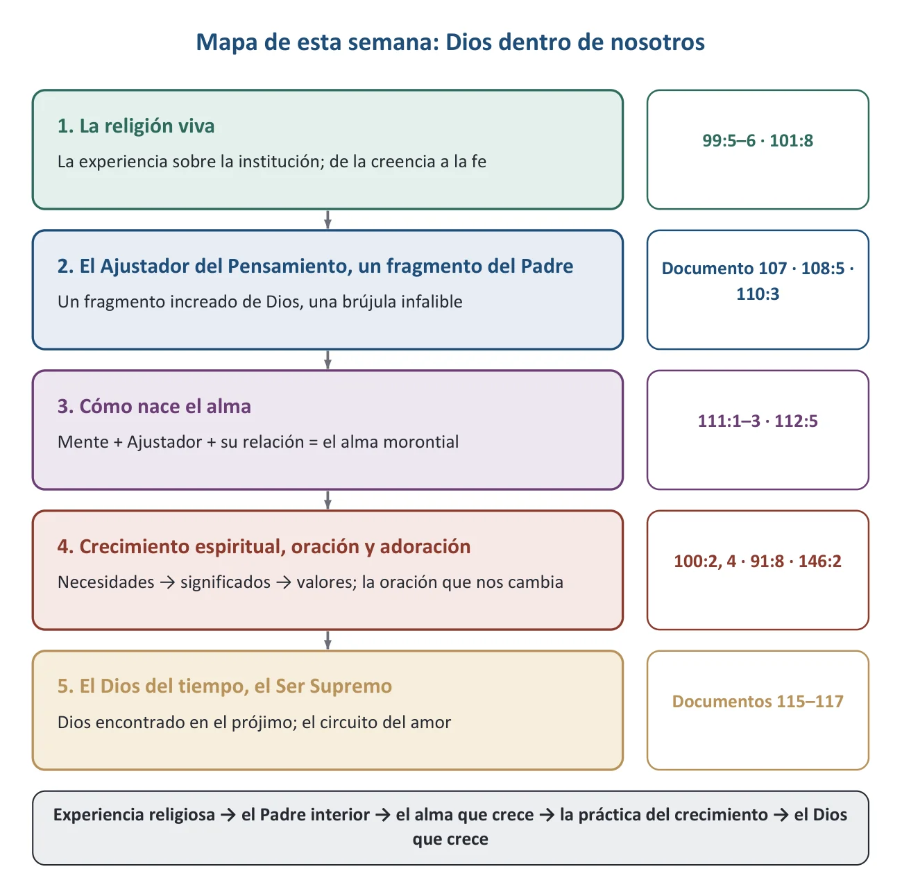
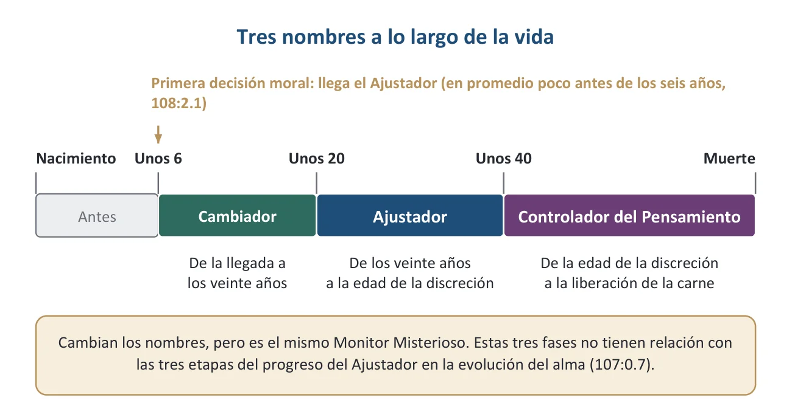
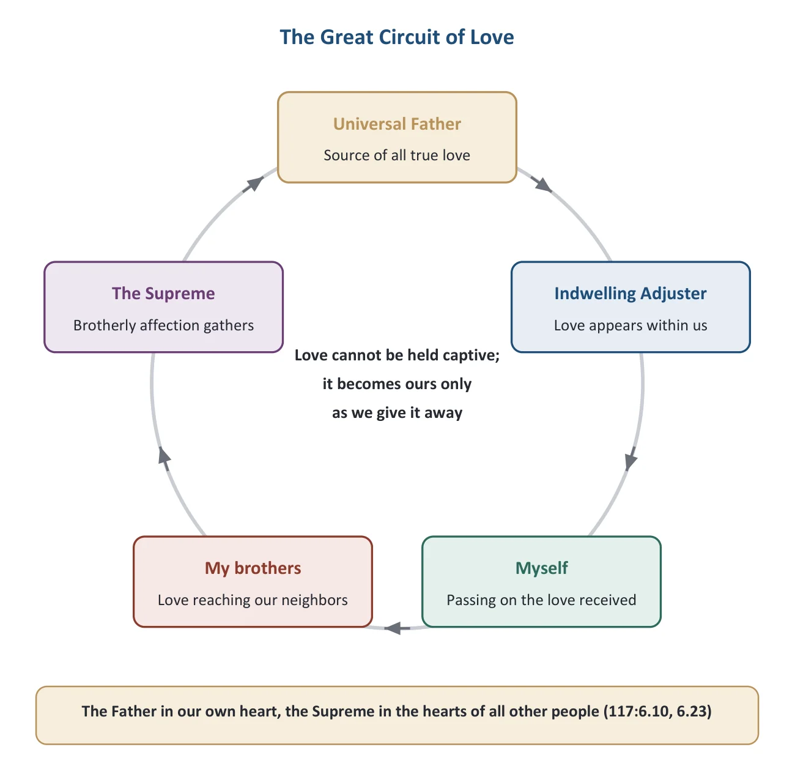

Dios dentro de nosotros
Lectura: Documento 99:5–6 · Documento 101:1, 8 · Documento 107 · Documento 108:5 · Documento 110:3 · Documento 111:1–3, 5 · Documento 112:5 · Documento 100:2, 4 · Documento 91:8 · Documento 146:2 · Documentos 115–117

Si las dos últimas semanas contaron la historia exterior de nuestro planeta, esta semana se vuelve hacia la historia interior del ser humano. El libro de Urantia dice que la verdadera religión no es una institución ni un credo, sino la experiencia personal de conocer a Dios como Padre. Esa experiencia es posible porque el Padre Universal ha enviado un fragmento de sí mismo, el Ajustador del Pensamiento, a vivir en la mente humana. A medida que la mente y el Ajustador trabajan juntos, crece un alma que puede sobrevivir a la muerte, y crece por medio de la oración, la adoración y el amor al prójimo. Todos estos pequeños crecimientos se suman al Dios que también crece en el tiempo, el Ser Supremo.
Relato inicial
Imagine una radio antigua. La emisora transmite día y noche, pero si el dial está un poco desviado, solo se oye ruido. Gire el dial despacio con la punta del dedo y, en el momento en que la frecuencia coincide, una canción surge clara entre los chasquidos. La señal había llenado la habitación todo el tiempo. Lo que cambió fue el receptor.
La historia interior que cuenta El libro de Urantia se parece mucho a esto. Dios está presente en cada mente humana en este mismo momento y nos guía sin pausa, pero la mayor parte del tiempo no oímos la música.
Esta semana miramos esa emisora interior, el Ajustador del Pensamiento; el alma que crece a medida que recibe la señal; y la oración y la adoración, la práctica de sintonizar el dial.
1. La religión viva: institución y experiencia
La religión es ante todo una experiencia
La palabra «religión» suele traer a la mente edificios, ceremonias y doctrinas. El libro de Urantia invierte el orden: la raíz de la religión es la relación viva entre una persona y Dios. El documento 99 lo dice en una sola frase.
Recuerda siempre: la verdadera religión consiste en conocer a Dios como a tu Padre y al hombre como a tu hermano. La religión no es la creencia esclavizadora en las amenazas de castigo ni las promesas mágicas de premios místicos futuros.99:5.2
¿Dónde ocurre esta experiencia? El documento 101 responde: no en la emoción agitada, sino en el tipo más elevado de pensamiento.
La religión no es el producto de la razón, pero vista desde adentro, es totalmente razonable. La religión no se deriva de la lógica de la filosofía humana, pero como experiencia mortal es totalmente lógica.101:1.1
El espíritu divino hace contacto con el hombre mortal, no mediante sentimientos o emociones, sino en el dominio del pensamiento más elevado y más espiritualizado. Son vuestros pensamientos los que os conducen hacia Dios.101:1.3
La intensidad de un sentimiento no es la medida de una experiencia religiosa. Dios se encuentra con las personas en el lugar tranquilo donde piensan en lo que es correcto y lo eligen.
Creencia y fe
El libro traza una línea cuidadosa entre la creencia y la fe. Aceptar una enseñanza como verdadera es creencia; solo se convierte en fe cuando cambia de verdad la dirección de una vida.
La creencia llega al nivel de la fe cuando motiva la vida y da forma a la manera de vivir. La aceptación de una enseñanza como verdadera no es fe; es meramente creencia101:8.1
La creencia es siempre limitadora y astringente; la fe es expansiva y liberadora. La creencia fija, la fe libera. … Las creencias pueden volverse posesiones del grupo, pero la fe ha de ser personal.101:8.2
| Punto de comparación | Creencia | Fe |
|---|---|---|
| Qué es | Aceptar una enseñanza como verdadera | Esa creencia gobierna la manera de vivir |
| Carácter | Limita y fija | Amplía y libera |
| Dónde vive | Puede sostenerla un grupo | Solo crece en el corazón de cada persona |
| Hacia qué mira | Doctrinas y declaraciones | El Dios vivo |
Un credo se puede recitar en grupo, pero nadie puede tener fe en lugar de otro. Entonces, ¿qué une a las personas de fe?
Algún día los religionistas se unirán y efectuarán una verdadera cooperación sobre la base de una unidad de ideales y objetivos en vez de intentar hacerlo sobre la base de opiniones psicológicas y creencias teológicas. Los objetivos, más bien que los credos, deberían unificar a los religiosos.99:5.7
El documento 103 deja claro el orden entre la teología y la religión.
Es mucho más fácil para los hombres concordar sobre valores religiosos —objetivos— que sobre creencias —interpretaciones. … La teología no produce la religión; es la religión la que produce la filosofía teológica.103:1.4
Cuando la institución se endurece
Nada de esto significa que el libro considere inútiles los grupos religiosos. Las personas que comparten una fe se reúnen de forma natural, y el documento 99 describe con calidez para qué sirve esa reunión.
Existe un propósito auténtico en la socialización de la religión. El propósito de las actividades religiosas de grupo consiste en dramatizar las lealtades de la religión; magnificar el atractivo de la verdad, la belleza y la bondad; … enaltecer el servicio de comunidad altruista; glorificar el potencial de la vida de familia; promover la educación religiosa; proveer asesoría sabia y guía espiritual; y alentar a la adoración comunitaria.99:6.2
El peligro llega cuando la reunión se endurece hasta convertirse en institución. La misma sección ofrece a continuación una larga lista de advertencias.
Pero cuando la religión se vuelve institucionalizada, se limita su poder para el bien, mientras que las posibilidades del mal se multiplican grandemente. Los peligros de una religión formalizada son: La fijación de las creencias y la cristalización de los sentimientos; … la desviación de la religión, del servicio a Dios al servicio a la iglesia; la tendencia de los líderes a volverse administradores en vez de ministros; … y la pérdida gradual del mensaje salvador del evangelio de la salvación eterna.99:6.3
Y deja una frase breve y sólida.
El sectarismo es una enfermedad de la religión institucional, el dogmatismo es el avasallamiento de la naturaleza espiritual. Es mucho mejor tener una religión sin iglesia que una iglesia sin religión.99:6.1
| Punto de comparación | Religión viva | Institución endurecida |
|---|---|---|
| Centro | La experiencia de una persona con Dios | La organización y su mantenimiento |
| Lo que une | Metas e ideales compartidos | Credos idénticos |
| Dirigentes | Ministros que sirven | Administradores que gestionan |
| La verdad | Crece y se interpreta de nuevo | Se estandariza y se fosiliza |
| Fruto | Frutos del espíritu, amor fraternal | Sectas, discriminación, exclusión |
Aclarar un malentendido
Un malentendido común: El libro de Urantia rechaza la iglesia y enseña a las personas a creer por su cuenta. Lo que dice El libro de Urantia: Los grupos religiosos tienen propósitos reales: la adoración y la educación, la comunidad y el servicio (99:6.2). Lo que el libro advierte es la presión de los credos y la rigidez institucional. El documento 103 dice que hay gran esperanza para toda iglesia que libere a sus miembros de la presión de los credos (103:5.12).
2. El Ajustador del Pensamiento, un fragmento del Padre
El más lejano y el más cercano de todos
En la semana 1 conocimos brevemente la expresión «un fragmento de Dios». El documento 107 presenta este fragmento por completo, y comienza con una paradoja sorprendente.
AUNQUE el Padre Universal resida personalmente en el Paraíso, en el centro mismo de los universos, también está realmente presente en los mundos del espacio en las mentes de sus incontables hijos temporales, porque mora en ellos en forma de Monitores Misteriosos. El Padre eterno está a la vez más lejos que nadie y más íntimamente asociado que nadie con sus hijos mortales planetarios.107:0.1
«Monitor Misterioso» es otro nombre del Ajustador del Pensamiento, y «residir» es vivir dentro. El Padre que está en el centro de todas las cosas está, al mismo tiempo, dentro de cada mente humana. ¿Por qué lo haría? El documento 107 relaciona este don con el mandato que vimos en el documento 1: «Sed vosotros perfectos».
Dios, habiendo mandado al hombre que sea perfecto, así como él es perfecto, ha descendido en forma de Ajustador para tornarse el socio experiencial del hombre en el logro del destino excelso que ha sido así ordenado. El fragmento de Dios que reside en la mente del hombre es el seguro absoluto y no condicionado de que el hombre puede encontrar al Padre universal en asociación con este Ajustador divino107:0.3
Dios no solo dio el mandato; descendió él mismo para ser nuestro socio en cumplirlo. ¿Es entonces el Ajustador algo así como un ángel creado por Dios? El documento 107 dice que no.
todos están de acuerdo de que éstos proceden directamente del Padre Universal, la Primera Fuente y Centro. No son seres creados; son entidades fragmentadas que constituyen la presencia de hecho del Dios infinito. … son de Dios, y en cuanto podemos discernir, son Dios.107:1.2
El Ajustador no es un mensajero que Dios envía, sino una parte de Dios mismo. Una taza de agua de mar no es todo el océano, pero es exactamente la misma agua. El documento 107 compara la obra del Ajustador con una brújula.
El Ajustador es una esencia absoluta de un ser infinito aprisionada en la mente de una criatura finita … El Ajustador es la realidad universal divina que hace hecho la verdad de que Dios es el Padre del hombre. El Ajustador es la brújula cósmica infalible del hombre, que apunta constante e infaliblemente el alma hacia Dios.107:0.6
Llamar Padre a Dios no es, por tanto, una simple figura retórica. El Padre ha compartido realmente su propio espíritu con sus hijos. Y este guía nunca falla.
Los ángeles y otros tipos elevados de seres espirituales, sin exceptuar a los Hijos del tipo del universo local, pueden ocasionalmente abrazar el mal, pueden ocasionalmente alejarse del camino divino, pero los Ajustadores no fallan jamás. Son absolutamente confiables, y esto es así en todos los siete grupos.108:5.3
Lo que hace el Ajustador
El Ajustador no está aquí para hacernos la vida cómoda. El documento 108 es claro en este punto.
Su misión corresponde principalmente a la vida futura, no a esta vida. Son llamados ayudantes celestiales, no ayudantes terrestres. No están interesados en hacer fácil la carrera mortal; más bien les interesa hacer vuestra vida razonablemente difícil y áspera, para que las decisiones estén estimuladas y multiplicadas.108:5.5
Un buen entrenador no le hace fácil el día al atleta. El Ajustador también se complace en nuestra salud y nuestra felicidad (110:1.3), pero todo ese cuidado se orienta hacia un solo fin: que sobrevivamos para siempre y lleguemos a ser cada vez más semejantes a Dios.
El problema es que esta guía es difícil de oír.
Pero usualmente, cuando vuestro Ajustador intenta comunicarse con vosotros, el mensaje se pierde en las corrientes materiales de los caudales de energía de la mente humana; tan sólo de vez en cuando oís un eco, un eco leve y distante, de la voz divina.110:3.1
Es exactamente la radio del relato inicial. ¿Significa eso que quien oye mal ha fracasado?
La ignorancia por sí sola no puede prevenir jamás la supervivencia; tampoco pueden las dudas confusas ni la incertidumbre temerosa. Sólo la resistencia consciente a la guía del Ajustador puede prevenir la supervivencia del alma inmortal evolutiva.110:3.5
Dudar y desviarse es muy distinto de darle la espalda deliberadamente. Cooperar con el Ajustador no es cuestión de experiencias místicas especiales; ocurre en los motivos y las decisiones de cada día (110:3.6). Tampoco es una renuncia sombría a uno mismo.
La meta magna de la existencia humana consiste en sincronizarse con la divinidad del Ajustador residente; … Pero un esfuerzo dedicado y determinado a la realización del destino eterno es totalmente compatible con una vida regocijada y alegre y con una carrera de éxito y honorable en la tierra. … la vida ideal es una vida de servicio amante y no una existencia de aprehensión temerosa.110:3.4
Tres nombres a lo largo de la vida
El documento 107 menciona también un detalle interesante: el Ajustador recibe nombres distintos a medida que la persona envejece.
desde la llegada del Ajustador hasta un crecimiento pleno comparativo, unos veinte años de edad en Urantia, los Monitores a veces se denominan Cambiadores de Pensamiento. Desde este momento hasta el alcance de la edad de la discreción, unos cuarenta años, los Monitores Misteriosos se denominan Ajustadores del Pensamiento. Desde el alcance de la discreción hasta la liberación de la carne, frecuentemente se los denomina Controladores del Pensamiento.107:0.7
El Ajustador llega hacia el momento en que el niño toma su primera decisión moral, en promedio poco antes de cumplir seis años (108:2.1). Los tres nombres pueden leerse no como un cambio en el Ajustador, sino como una relación cada vez más profunda entre la persona y el Ajustador.
Después de contar toda la vida de Jesús, el último documento del libro deja esta tarea a las personas de hoy.
El gran desafío del hombre moderno consiste en alcanzar una mejor comunicación con el Monitor divino que reside en la mente humana.196:3.34

Palabras nuevas
- Monitor Misterioso: Otro nombre del Ajustador del Pensamiento, llamado así porque su naturaleza sigue envuelta en misterio.
- Residir: Vivir dentro. El Ajustador reside en la mente humana, no en el cerebro (110:1.1).
- Fusión: La unión eterna del alma humana que sobrevive con el Ajustador. Una vez fusionados, los dos ya no pueden separarse jamás.
Aclarar un malentendido
Un malentendido común: El Ajustador del Pensamiento es solo otro nombre de la conciencia moral, o de los buenos pensamientos de mi propia mente. Lo que dice El libro de Urantia: El Ajustador no es un ser creado ni una parte de la mente humana; es un fragmento de Dios mismo (107:1.2). Nunca pasa por encima de la voluntad humana, sino que respeta siempre las elecciones de la persona (111:1.8), y actúa en los conflictos entre el bien y el mal aun cuando la persona no se da cuenta (108:5.9).
3. Cómo nace el alma
El escenario de la mente
El Ajustador trabaja en la mente humana. El documento 111 muestra de dónde viene cada una de tres cosas: el cuerpo, el Ajustador y la mente.
La evolución material te ha proveído con una máquina vital, tu cuerpo; el Padre mismo te ha dotado de la realidad espiritual más pura conocida en el universo, tu Ajustador del Pensamiento. Pero en tus manos, sujeta a tu libre albedrío, se te ha dado la mente, y es por la mente por la que vives o mueres. Es dentro de la mente y con la mente que tomas esas decisiones morales que te permiten alcanzar semejanza con el Ajustador, que es semejanza con Dios.111:1.4
La evolución dio el cuerpo, y el Padre dio el Ajustador. Solo la mente, que está entre ambos, se ha puesto «en tus manos». El documento 111 representa a los tres como un solo barco.
La mente es tu buque, el Ajustador es tu piloto, la voluntad humana es el capitán. El dueño del barco mortal debería tener la sabiduría de confiar en el piloto divino para guiar a su alma ascendente a los puertos morontiales de la supervivencia eterna.111:1.9
Por hábil que sea el piloto, quien manda es el capitán. El Ajustador muestra el camino, pero es la voluntad humana la que fija el rumbo. El documento 111 vuelve a subrayarlo.
Los Ajustadores manipulan pero nunca dominan la mente del hombre contra su voluntad; para los Ajustadores la voluntad humana es suprema.111:1.8
No dos, sino tres
¿Qué es, entonces, el alma? El libro de Urantia dice que el alma no se nos entrega al principio; crece.
Existen tres y no dos factores en la creación evolucionaria de tal alma inmortal. Estos tres antecedentes del alma morontial humana son: 1. La mente humana y todas las influencias cósmicas antecedentes a ella y relacionadas con ella. 2. El espíritu divino que mora en esta mente humana … 3. La relación entre la mente material y el espíritu divino, que connota un valor y lleva un significado que no se encuentran en ninguno de los factores contribuyentes a dicha asociación. La realidad de esta relación singular no es ni material ni espiritual, sino morontial. Es el alma.111:2.4-7
El alma nace de la relación entre la mente y el Ajustador. Cuando dos personas comparten una larga amistad, esa amistad se convierte en una realidad nueva que no pertenece a ninguna de las dos por separado, sino que vive entre ambas. El documento 112 llama al alma un «hijo».
Existe algo real, algo de la evolución humana, algo adicional al Monitor Misterioso, que sobrevive a la muerte. Esta entidad de nueva aparición es el alma, y sobrevive a la muerte tanto del cuerpo físico como de la mente material. Esta entidad es el hijo conjunto de la vida combinada y los esfuerzos del tú humano en enlace con el tú divino, el Ajustador.112:5.12

Lo que estamos llegando a ser
¿Qué hace crecer el alma? El documento 111 se fija menos en cuánto sabe una mente que en hacia dónde mira.
Y no es tanto lo que la mente comprende, sino más bien lo que desea comprender, aquello que asegura la supervivencia; no es tanto cómo es la mente, sino cómo está tratando de ser la mente lo que constituye la identificación espiritual. … Lo que eres hoy no es tan importante como lo que llegues a ser día a día y en la eternidad.111:1.5
Aunque quede mucho por saber y mucho por alcanzar, el alma crece mientras siga eligiendo la dirección de querer conocer a Dios. Y lo que crece de esta manera no se pierde.
Pero es por siempre verdad: lo que comenzáis en el tiempo, terminaréis indudablemente en la eternidad —si es que vale la pena terminarlo.111:3.7
La personalidad que no cambia
El documento 112 nos dice dónde comienza este viaje.
Urantia es tu punto de partida; aquí tú y tu Ajustador del Pensamiento divino os combináis en una unión temporal. … Has recibido el don de una guía perfecta; … Y a través de todas estas edades y etapas sucesivas de crecimiento evolucionario, existe una parte de ti que permanece absolutamente inalterada, y ésa es la personalidad —la permanencia en presencia del cambio.112:0.1
Lo que permanece igual mientras el alma crece es la personalidad. La personalidad es la identidad única que el Padre Universal da a cada persona, y no hay dos iguales (112:0.12). Es este mismo «yo» el que despierta en los mundos de estancia después de la muerte. Allí regresa el Ajustador y une la vida antigua con la nueva.
El Ajustador del Pensamiento recordará y volverá a recontar para ti sólo aquellos recuerdos y experiencias que son parte de tu carrera universal y que son esenciales para ésta. … Pero la personalidad y los enlaces entre personalidades no son jamás andamios; la memoria mortal de las relaciones con las personalidades tiene valor cósmico y persistirá.112:5.22
Muchos recuerdos se retiran como el andamio cuando el edificio está terminado, pero nuestras relaciones con las personas que amamos permanecen. El viaje después de la muerte que seguimos en la semana 6 tiene su semilla creciendo aquí y ahora, en esta tierra.
Palabras nuevas
- Alma: La realidad morontial que nace y crece a partir de la relación entre la mente y el Ajustador residente. Sobrevive a la muerte.
- Morontia: El nivel de realidad que está entre lo material y lo espiritual. A él pertenecen el alma y los cuerpos de los mundos de estancia.
- Personalidad: El don único que el Padre Universal da a cada persona, el «yo» que permanece invariable en medio del cambio.
4. Crecimiento espiritual, oración y adoración
Tres pasos de crecimiento
El documento 100 resume en tres pasos el camino del crecimiento espiritual.
El crecimiento espiritual es en primer lugar, el despertar a las necesidades, luego el discernimiento de los significados y finalmente el descubrimiento de los valores. La prueba de verdadero desarrollo espiritual consiste en la exhibición de una personalidad humana motivada por el amor, activada por el ministerio altruista y dominada por la adoración sincera de los ideales de perfección de la divinidad.100:2.2
Nos damos cuenta de que algo falta, empezamos a ver lo que significan los acontecimientos de la vida y, entre ellos, descubrimos lo que es realmente valioso. Este crecimiento no siempre es suave.
Las perplejidades religiosas son inevitables; no puede haber crecimiento ninguno sin conflicto psíquico y agitación espiritual.100:4.2
Una temporada en que la fe se tambalea no tiene por qué verse como un fracaso. El documento 100 dice que hay un lugar que no cae ni siquiera en esos momentos.
Jesús ilustró la profunda seguridad del mortal conocedor de Dios cuando dijo: «Para un creyente del reino quien conoce a Dios, ¿que importa si todas las cosas terrenales se arruinan?» Las seguridades temporales son vulnerables, pero las certezas espirituales son impregnables. Cuando las mareas de la adversidad humana, el egoísmo, la crueldad, el odio, la maldad y los celos golpean el alma mortal, podéis reposar en la seguridad de que existe un bastión interior, la citadela del espíritu, que es absolutamente inatacable100:2.7

Una persona por día
La prueba del crecimiento es el amor. Pero el amor no nace solo de la resolución. El documento 100 ofrece un camino muy práctico.
No puedes realmente amar a tus semejantes por un simple acto de tu voluntad. El amor tan sólo nace de la comprensión completa de las motivaciones y sentimientos de tus semejantes. No es tan importante amar a todos los hombres hoy como lo es que cada día aprendes a amar aún a uno más entre los seres humanos.100:4.6
El documento 100 muestra también cómo la comprensión madura hasta hacerse amor.
Una vez que entiendas a tu prójimo, te volverás tolerante, y esta tolerancia crecerá en amistad y madurará en el amor.100:4.4
Tratar de comprender a la única persona que hoy nos pesa en el ánimo es un paso más grande que prometer amar a toda la humanidad.
La oración cambia al que ora
¿Qué es la oración? El documento 91 pone la oración junto a la magia para mostrar la diferencia.
La magia era un intento de adaptar la Deidad a las condiciones; la oración es el esfuerzo de adaptar la personalidad a la voluntad de la Deidad.91:8.2
La magia intenta doblegar el cielo a nuestra voluntad; la oración intenta doblegar nuestra voluntad al cielo. El documento 91 compara esto con las alas de un pájaro.
Pero la verdadera oración logra la realidad. Aunque las corrientes de aire sean ascendentes, el pájaro no podrá ascender a menos que extienda las alas. La oración eleva al hombre porque es una técnica de progresar mediante la utilización de las corrientes espirituales ascendentes del universo.91:8.9
Dios responde a la oración del hombre dándole una mayor revelación de la verdad, una enaltecida apreciación de la belleza, y un concepto aumentado de la bondad. La oración es un gesto subjetivo, pero pone en contacto con realidades objetivas poderosas en los niveles espirituales de la experiencia humana91:8.11
La oración no es una técnica de escape de los conflictos sino más bien un estímulo para crecer al enfrentarse al conflicto mismo. Ora tan sólo por valores, no por cosas; por crecimiento, no por gratificación.91:8.13
Jesús también enseñó extensamente a sus discípulos sobre la oración en Jotapata, un pequeño pueblo de Galilea. Uno de sus puntos principales fue este.
La oración no cambia la actitud divina hacia el hombre, pero sí cambia la actitud del hombre hacia el Padre inmutable.146:2.8
También les enseñó a guardar silencio un rato después de orar.
Jesús enseñó a sus seguidores a que, después de elevar sus oraciones al Padre, permanecieran en acallada receptividad por un tiempo ofreciendo así al espíritu residente una mejor oportunidad para hablar al alma dispuesta a escuchar. … La adoración, enseñó Jesús, lo hace a uno cada vez más semejante al ser que está adorando.146:2.17
Si la oración es el tiempo de hablar, el silencio es el tiempo de escuchar, el tiempo de sintonizar el dial de la radio. A medida que la oración madura, se convierte en adoración. La oración todavía lleva algo de nuestras propias necesidades; la adoración no pide nada y simplemente se deleita en Dios por ser Dios.
Tu voluntad es mi voluntad
Todo este crecimiento se reduce a una sola elección: la elección de hacer la voluntad del Padre. El documento 111 dice que esta elección no aplasta la voluntad, sino que la usa en toda su plenitud.
Esta elección no consiste tanto en la negación de la voluntad de la criatura: «Que se haga no mi voluntad sino la tuya»; sino que consiste en la afirmación positiva de la criatura: «Es mi voluntad que se haga tu voluntad».111:5.6
Junto a la Biblia
Pablo preguntó: «¿No sabéis que sois templo de Dios, y que el Espíritu de Dios mora en vosotros?» (1 Corintios 3:16). Jesús enseñó a sus oyentes a entrar en su cámara y orar al Padre «que está en secreto» (Mateo 6:6). El libro de Urantia explica con más amplitud este «Dios dentro de nosotros» con el nombre de Ajustador del Pensamiento.
Aclarar un malentendido
Un malentendido común: La oración es una manera de conseguir lo que queremos, y si pedimos durante mucho tiempo y con insistencia, Dios cambiará de parecer. Lo que dice El libro de Urantia: La oración no cambia la actitud de Dios, sino la nuestra (146:2.8). Dios responde a la actitud del alma, no a las palabras (91:8.12). Jesús advirtió contra la costumbre de orar solo en tiempos de dificultad y enseñó que la única forma de oración apropiada para todos los hijos de Dios es «se hará la voluntad tuya» (146:2.12).
5. El Dios del tiempo, el Ser Supremo
El Dios que está creciendo
Por último encontramos la idea menos familiar de la semana. Dios el Padre es eterno y perfecto, y no crece. Sin embargo, El libro de Urantia dice que hay también un Dios que crece junto con los universos del tiempo y del espacio. Es el Ser Supremo.
El Supremo es Dios en el tiempo; él es el secreto del crecimiento de la criatura en el tiempo; también es suya la conquista del presente incompleto y la consumación del futuro en proceso de perfeccionamiento.117:2.1
«El Supremo» es el nombre abreviado que el libro usa para el Ser Supremo. El documento 116 observa que una mirada honesta a la confusa Urantia hace razonable concluir que este mundo está gobernado por Creadores que todavía no son perfectos (116:0.2). El universo no es una casa terminada, sino una casa que todavía se está construyendo.
Mis elecciones se suman
Lo más notable de esta enseñanza es que las elecciones humanas se suman realmente a ese crecimiento.
EN LA MEDIDA en que nosotros hagamos la voluntad de Dios en cualquiera de las estaciones universales en las que vivamos nuestra existencia, en esa misma medida el potencial todopoderoso del Supremo se acercará un paso más al actual.117:0.1
El documento 115 muestra brevemente en qué se diferencia nuestra posición ante el Padre y ante el Supremo.
CON Dios el Padre, la filiación es la relación más importante. Con Dios el Supremo, el logro es el prerrequisito del estado: es necesario hacer algo, así como ser alguien.115:0.1
| Punto de comparación | Dios el Padre | Dios el Supremo |
|---|---|---|
| Naturaleza | Eterno y perfecto | Crece en el tiempo |
| Nuestra relación | Filiación, dada como un don | Logro, alcanzado en común |
| Dónde lo encontramos | En nuestro propio corazón | En el corazón de todas las demás personas |
| Descubrimiento | Una sola persona puede encontrarlo | Lo encuentran todas las criaturas juntas |
El gran circuito del amor
¿Dónde, entonces, encontramos al Supremo? El documento 117 responde así.
El hombre puede descubrir al Padre en su corazón, pero tendrá que buscar al Supremo en el corazón de todos los demás hombres117:6.23
El camino hacia el Padre se dirige hacia dentro; el camino hacia el Supremo se dirige hacia fuera, hacia nuestro prójimo. Los dos caminos se unen en un gran círculo.
su Deidad es la gran avenida a través de la cual el amor del Padre fluye hacia toda la creación, y es la gran avenida a través de la cual las criaturas finitas pasan hacia dentro en su búsqueda del Padre, quien es amor.117:6.3
El documento 117 muestra después qué recorre esa avenida.
El hombre no puede tomar jamás el amor del Padre y aprisionarlo en su corazón. El amor del Padre puede llegar a ser real para el hombre mortal sólo al pasar a través de la personalidad del hombre cuando a su vez dona ese amor a sus semejantes. El gran circuito del amor viene del Padre, a través de los hijos a los hermanos y de ahí al Supremo. El amor del Padre aparece en la personalidad mortal por ministerio del Ajustador residente. Este hijo que conoce a Dios revela este amor a sus hermanos universales, y este afecto fraternal es la esencia del amor del Supremo.117:6.10
El amor no es un estanque quieto, sino un río que fluye. El amor que recibimos del Padre se hace nuestro solo cuando lo dejamos fluir hacia los demás. Y a medida que ese caudal crece, crece el Dios del tiempo.

Este descubrimiento no llega de una sola vez.
Los hombres no hallan al Supremo en forma repentina y espectacular como un terremoto abre abismos en las rocas, sino que lo encuentran lenta y pacientemente como un río que va desgastando quietamente su lecho.117:6.25
Y quienes recorren este camino nunca están solos.
Pero ningún mortal que conoce a Dios puede estar nunca solo en su viaje a través del cosmos, porque sabe que el Padre camina a su lado a cada paso, mientras que el camino mismo que está atravesando es la presencia del Supremo.117:6.27
Dentro de nosotros, el Padre camina a nuestro lado; bajo nuestros pies, el camino mismo es el Supremo. El documento 117 nos recuerda qué se busca en todo este viaje.
Demasiado frecuentemente los hombres olvidan que Dios es la experiencia más grande en la existencia humana. Otras experiencias están limitadas en su naturaleza y contenido, pero la experiencia de Dios no tiene límites excepto los de la capacidad de comprensión de la criatura, y esta misma experiencia es en sí misma ampliadora de la capacidad. Cuando los hombres buscan a Dios, lo buscan todo. Cuando encuentran a Dios han encontrado todo.117:6.9
El estudio de esta semana cabe en una sola frase: Dios vive dentro de nosotros, y volvemos a encontrarlo en nuestro prójimo.
Palabras nuevas
- Ser Supremo: El Dios que crece por medio de la experiencia junto con los universos del tiempo y del espacio. Cuando se nombra solo, también se le llama «el Supremo».
- Conciencia de Dios: La experiencia de darse cuenta de la realidad de Dios por medio del espíritu residente (103:1.6).
- Gran circuito del amor: El círculo en el que el amor del Padre fluye a través de cada persona hacia su prójimo y luego hacia el Supremo.
Puntos clave de la semana
- La verdadera religión es la experiencia viva de una persona que conoce a Dios como Padre y a los demás como hermanos y hermanas.
- La creencia acepta una enseñanza; la fe es esa creencia cambiando realmente una vida. Cuando una institución se endurece, el poder de la religión se debilita.
- El Ajustador del Pensamiento no es un ser creado, sino un fragmento real del Padre Universal, una brújula infalible que siempre orienta el alma hacia Dios.
- El alma no se da al principio. Nace como realidad morontial de la relación entre la mente y el Ajustador, crece y sobrevive a la muerte.
- La mente es el barco, el Ajustador el piloto, la voluntad el capitán. El Ajustador nunca pasa por encima de la voluntad humana.
- La oración no cambia a Dios; nos cambia a nosotros. La adoración nos hace cada vez más semejantes a Aquel a quien adoramos.
- El Ser Supremo es Dios que crece en el tiempo. Encontramos al Padre dentro de nosotros y al Supremo en nuestro prójimo.
Preguntas para reflexionar
- De las cosas que dice «creer», ¿cuáles están cambiando de verdad su manera de vivir? A la luz de la distinción del documento 101, ¿cada una es creencia o fe?
- En la imagen de la mente como el barco, el Ajustador como el piloto y la voluntad como el capitán (111:1.9), ¿qué clase de capitán es usted ahora?
- Si esta semana practicara «cada día aprendes a amar aún a uno más entre los seres humanos» (100:4.6), ¿quién sería esa persona y por dónde podría empezar?
Lectura para la próxima semana
- Documentos 119–170 — El Creador se hace Hijo del Hombre: los siete autootorgamientos de Micael y la vida de Jesús de Nazaret